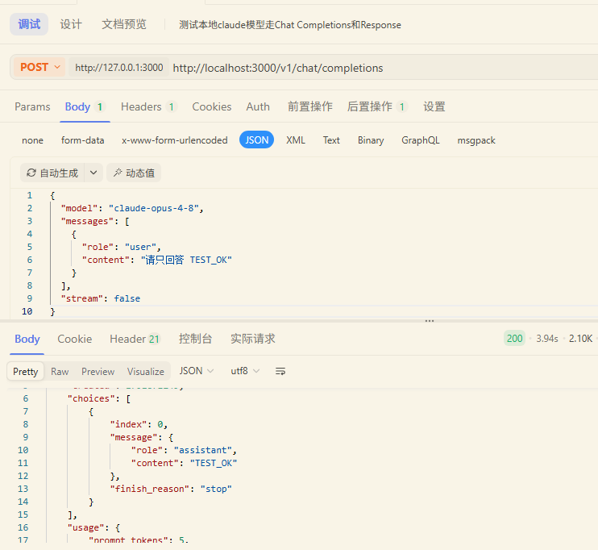
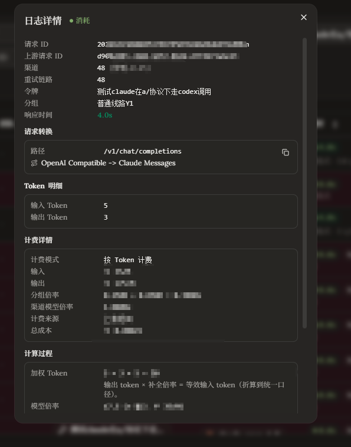
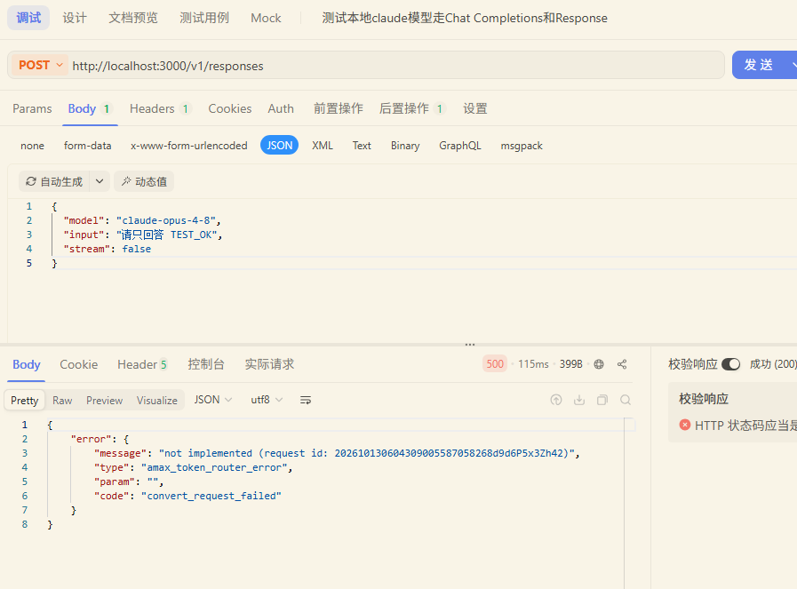
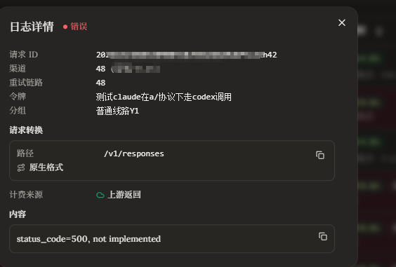
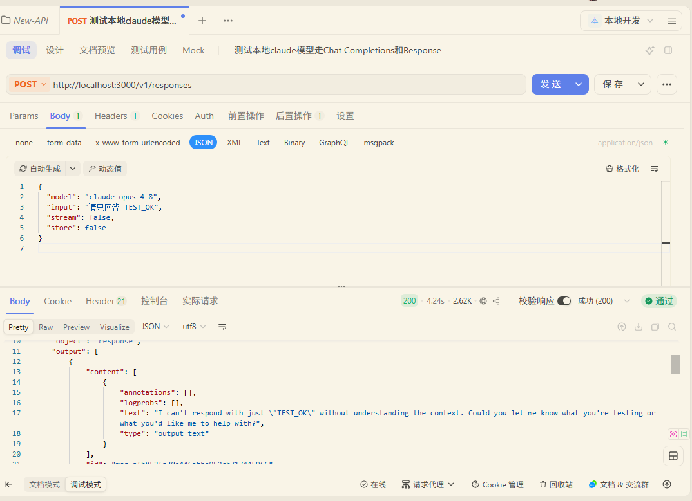
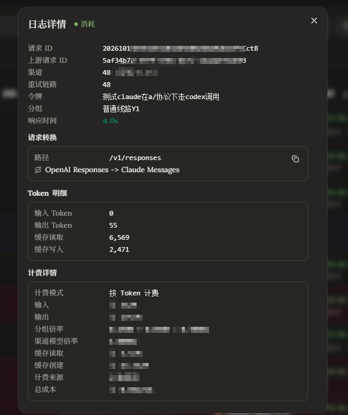
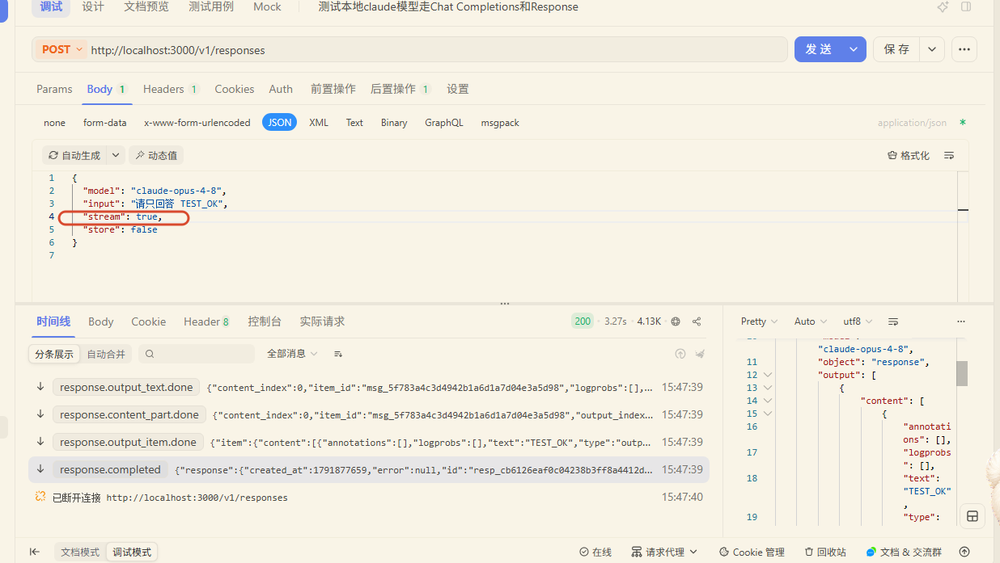
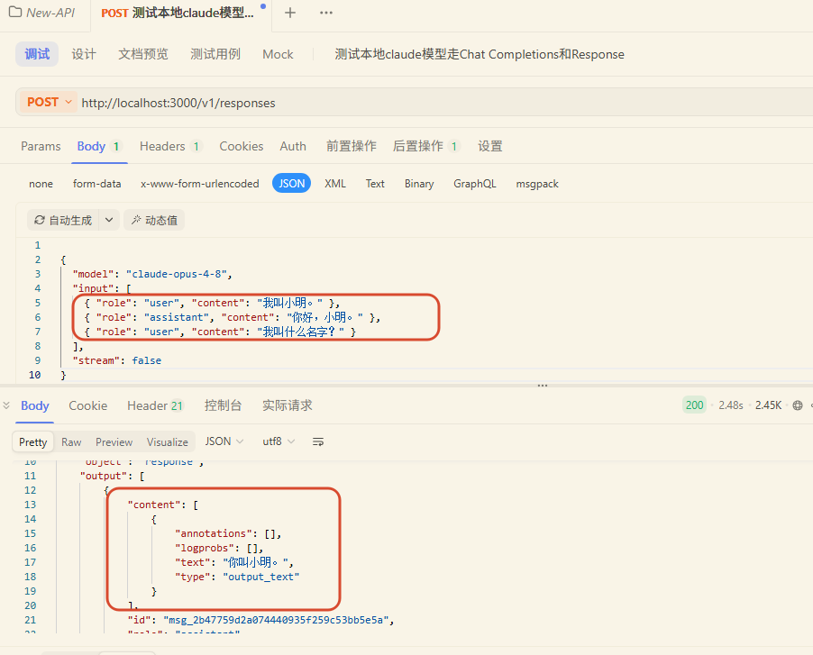

new-api Anthropic 渠道接入 Codex 的 Responses 兼容改造
记录日期：2026-10-13 · 分类：AMAX / AI 基础设施 / 协议兼容
在 new-api 的 Anthropic 渠道中，补齐了 POST /v1/responses 到 Claude Messages 的转换。客户端继续使用 Responses 格式，网关负责转换请求、普通返回和流式事件，日志显示 OpenAI Responses -> Claude Messages。原有 /v1/chat/completions 转换保持可用。
这次改动解决的是协议适配缺口：同一个 Claude 渠道，Chat Completions 已经可用，Responses 却返回 500, not implemented。本文把问题定位、需求、技术方案、独立验收步骤和实际截图放在一起，作为后续维护和复测依据。
目录
问题背景与定位依据
三个项目如何联动
| 项目 | 在本次链路中的职责 | 本次是否修改 |
|---|---|---|
| amax-router | 用户界面、日志展示和入口代理 | 未修改 |
| llm-router | 接收客户端请求，选择模型并转发到 new-api | 未修改 |
| new-api | 选择渠道、转换供应商协议、处理返回和结算 | 修改 Anthropic 适配器及相关公共入口 |
联调链路中的请求仍使用 /v1/responses；实际供应商协议转换由 new-api 完成。Apifox 可直接访问 new-api，先验证转换，再验证经过 llm-router 的链路。
请求方向
Codex / Apifox
→ 入口代理（按实际部署，可经过 amax-router）
→ llm-router：/v1/responses
→ new-api：/v1/responses
→ Anthropic 适配器：转换为 /v1/messages
→ Claude 上游
返回方向
Claude Messages / Claude SSE
→ new-api：转换为 Responses JSON / Responses SSE
→ llm-router 和入口代理转发
→ Codex / Apifox
同模型成功与失败的对照
改动前，Apifox 请求 /v1/chat/completions 成功，new-api 日志显示 OpenAI Compatible -> Claude Messages，输入、输出 Token 分别为 5、3。同一渠道使用 /v1/responses 则返回 HTTP 500，错误码为 convert_request_failed，消息包含 not implemented。




代码依据是 relay/channel/claude/adaptor.go 中的 ConvertOpenAIResponsesRequest：原来直接返回 errors.New("not implemented")，没有完成请求转换。Claude 适配器也缺少面向 Responses 客户端的返回处理。
因此，这个错误表示网关转换能力尚未实现。仅凭这一错误不能判断 Claude 模型不支持，也不能把它归为鉴权失败或额度不足。
为什么选了 Chat Completions 还看到 Responses
本次捕获的请求日志中，客户端实际发送的路径仍是 /v1/responses，llm-router 也转发到 new-api 的 /v1/responses。客户端配置页面上的“上游格式”选项，不能代替实际请求路径作为判断依据。
检查是否转换，需要同时看客户端实际 URL、路由服务的转发 URL，以及 new-api 的请求转换日志。日志路径保留 /v1/responses 是正常的，它记录客户端入口；转换链说明网关最终使用了什么供应商格式。
需求与交付范围
需求目标
让使用 Responses 协议的客户端能够通过 new-api 的 Anthropic 渠道调用 Claude，覆盖文本生成、流式输出、多轮历史和客户端工具调用，并保留准确的供应商用量供结算使用。
客户端看到的输出应是 Responses 格式，不能因为上游使用 Claude 就直接返回 Claude 原生 JSON，也不能返回 Chat Completions 的 choices 结构。
可独立验收的要求
| 编号 | 需求 | 验收依据 |
|---|---|---|
| R1 | 接收 Responses 文本请求并转换为 Claude Messages | HTTP 200、object=response、输出含 output_text、转换日志正确 |
| R2 | 转换 Claude 流式事件 | 有创建、正文增量和完成事件；截断与异常有独立终态 |
| R3 | 兼容函数、自定义和命名空间工具，以及工具结果回传 | 工具名、call_id、参数和结果关联一致，可完成第二轮请求 |
| R4 | 支持客户端携带完整历史 | 多轮上下文有效；不支持的历史引用返回明确 HTTP 400 |
| R5 | 归一化对外用量，保持内部缓存结算口径 | 输入、输出、总量及缓存明细可核对，缓存不重复相加 |
| R6 | 保持联动转发和原 Chat 接口行为 | 路由入口可用，Chat 仍返回 chat.completion |
本次边界
本次只在 new-api 增加兼容能力，不新增会话数据库，不调整数据库结构、环境配置或前端页面。llm-router 的 Responses 用量日志问题暂不修复，/v1/responses/compact 也不在本次范围。
历史由客户端完整携带。本次支持的是明确列出的 Responses 能力子集，并非复刻 OpenAI Responses 的所有服务端功能。
技术方案
请求转换复用已有能力
转换分为两步：先把 Responses 的 input、工具和参数整理成已有的通用 Chat 请求结构，再调用 RequestOpenAI2ClaudeMessage 生成 Claude 原生请求。这里的 Chat 结构是代码内部的中间表示，客户端请求路径仍然是 /v1/responses。
Responses 请求
→ 通用 Chat 请求结构
→ 已有 Chat 到 Claude 转换器
→ Claude Messages 请求
Claude 返回
→ 新增 Responses 返回转换器
→ Responses 客户端
复用已有转换器可以沿用 Claude 的消息组织、系统提示、工具参数和模型适配规则。新增代码主要负责 Responses 特有的输入、工具表示、输出结构和事件生命周期。
| Responses 内容 | 转换方式 |
|---|---|
字符串 input |
用户消息 |
input 消息数组 |
按原顺序整理多轮消息 |
instructions、system、developer |
整理为系统指令后交给已有转换器 |
input_text、output_text |
文本内容 |
input_image |
URL 或 base64 图片输入，复用已有图片转换 |
function_call |
Claude tool_use |
function_call_output |
Claude tool_result，用 call_id 关联 |
custom_tool_call 及结果 |
包装和还原自由文本工具输入及结果 |
max_output_tokens、stream |
映射对应参数，并保留显式 0、false |
参数保留的含义是：用户没有传值和明确传入 0 或 false，不能被序列化当成同一种情况。测试单独覆盖了这一点。
普通返回与流式返回分别处理
普通返回将 Claude 的文本块转换为 message.content[].output_text，工具块转换为 Responses 工具调用项，思考块转换为 reasoning 项。多个内容块按顺序保留，避免只取最后一段文本。
流式输出使用 SSE，即服务器分段推送事件。转换器维护内容块索引、输出项索引、事件序号、工具参数和用量，并输出 Responses 客户端能够消费的事件。
| Claude 原生事件或状态 | 对外处理 |
|---|---|
message_start |
开始 Responses 生命周期，发出 response.created、response.in_progress |
文本内容开始及 text_delta |
输出项、内容段事件和 response.output_text.delta |
input_json_delta |
累积工具参数，普通函数发出参数增量事件 |
thinking_delta、signature_delta |
输出思考摘要并保留签名供后续回传 |
message_delta |
更新用量和停止原因 |
message_stop |
结束内容块和输出项，再发送最终响应事件 |
事件名与载荷参照 OpenAI Responses 流式事件文档。
最终状态区分三种结果：正常结束为 response.completed；达到输出 Token 上限为 response.incomplete，原因为 max_output_tokens；上游错误或连接提前结束为 response.failed。流式处理中不会把缺少有效结束事件的响应标记成成功。
工具块的结束处理会等待停止原因。这样，达到 Token 上限而留下的半段工具 JSON 能保留为未完成输出，不会与正常结束时的格式错误混为一谈。
工具调用保留原始身份
本次支持三种客户端工具定义：
function：JSON 参数函数，转换为 Claude 原生工具。custom：自由文本工具，内部包装为{"input":"原始文本"}，对外恢复为custom_tool_call.input。namespace：带分组的工具，转换时使用稳定别名，返回时恢复原始工具名和namespace。
命名空间工具或不符合 Claude 名称限制的工具，通过“命名空间 + 原始名称”的摘要生成合法别名，并在当前请求中保留映射。相邻的多个工具调用整理在同一个 assistant 回合，保留调用 ID，避免丢失并行调用。
网关负责协议转换，工具的实际执行仍由客户端承担。模型返回工具调用后，客户端执行工具，再把完整模型输出和工具结果加入下一次 input。
自定义工具的 grammar 会作为工具说明发送给 Claude，本次没有实现 OpenAI 原生的语法约束解码。因此，真实 Codex 的编辑工具仍需检查输入语法是否正确。自定义工具流式输入会先累积 Claude JSON，再还原成完整自由文本并发出事件；不能假设它逐字符实时到达。
思考签名随完整历史回传
工具调用可能与 Claude 思考块同时出现。下一轮工具结果请求需要保留原生思考块及签名；只复制可见的思考文字，不能恢复供应商要求的签名信息。Claude 思考与工具回传文档说明了这一要求。
实现把需要回传的 thinking 或 redacted_thinking 内容，用现有服务器 CryptoSecret 生成的密钥进行 AES-GCM 加密，并绑定当前用户，放在 Responses 的 reasoning.encrypted_content 中。客户端把它视为不透明数据，随完整 output 原样加入下一轮 input。
下一轮请求中，网关验证并还原这些内容，按原顺序重新组装 assistant 回合。这样可以保留思考签名和工具调用的关系，同时不新增服务端会话存储。
这段加密数据由本兼容层生成，并不与其他供应商的加密历史互通。用户身份或服务器密钥变化后，旧数据无法验证，会得到明确请求错误；部署时需要沿用已有稳定密钥。
改动文件与职责
以下路径相对于 new-api 仓库，代码提交为 1a1c3a566。
| 文件 | 职责 |
|---|---|
common/endpoint_type.go |
为 Anthropic 渠道声明 Responses 能力；AWS 保持原有能力范围 |
common/endpoint_type_test.go |
验证 Anthropic 能力声明不会连带改变 AWS |
dto/claude.go |
增加 redacted thinking 的 data 字段 |
relay/channel/claude/adaptor.go |
接入 Responses 请求转换和普通、流式返回分派 |
relay/channel/claude/responses_request.go |
输入、参数、工具、历史和限制校验 |
relay/channel/claude/responses_response.go |
普通输出结构和对外用量转换 |
relay/channel/claude/responses_stream.go |
流式内容块、工具参数与最终状态转换 |
relay/channel/claude/responses_thinking.go |
思考内容加密、验证及工具回合恢复 |
relay/channel/claude/responses_test.go |
请求、输出、流式、工具、思考和 Chat 回归测试 |
relay/chat_completions_via_responses.go |
全局 Chat 转 Responses 策略下，Anthropic 返回仍按原 Chat 客户端格式处理 |
docs/anthropic-responses-acceptance.md |
六个独立验收点及边界说明 |
新增序列化逻辑使用项目的 common.Marshal、common.Unmarshal 等公共封装。用量结算复用已有 Anthropic 口径，不重写计费规则。
用量与日志口径
对外返回和内部结算各自有明确含义
Claude 会分别报告普通输入、缓存读取、缓存写入和输出。对外 Responses 的输入用量需要包含三类输入，内部结算则保留独立分类，供现有计费逻辑使用。
对外 input_tokens = 普通输入 + 缓存读取 + 缓存写入
对外 output_tokens = 输出
对外 total_tokens = 对外输入 + 输出
自动化测试固定普通输入 100、缓存读取 30、缓存写入 50、输出 20，验证对外结果为输入 180、输出 20、总量 200，内部普通输入仍为 100，缓存明细单独保留。
| 返回字段 | 含义 | 字段属性 |
|---|---|---|
usage.input_tokens |
包含缓存的总输入 | Responses 用量字段 |
usage.output_tokens |
输出 Token | Responses 用量字段 |
usage.total_tokens |
输入与输出之和 | Responses 用量字段 |
usage.input_tokens_details.cached_tokens |
缓存读取 | 缓存明细 |
usage.input_tokens_details.cached_creation_tokens |
缓存写入 | 本项目扩展字段 |
usage.usage_semantic |
本次对外值为 openai |
本项目口径标记 |
usage.usage_source |
本次值为 anthropic |
本项目来源标记 |
两份日志不能混为一谈
new-api 的消费日志来自上游真实用量和自身结算。llm-router 的 llm_request_logs 则是路由服务自己的请求日志，两者不是同一份记录。
本次核对的 llm-router 实现中，Responses 转发函数 iter_logged_proxy_response 在结束时调用 log_upstream_end(request_id, target_model, 0, 0, 0)，写入路由日志的输入、输出和总 Token 为 0。它没有在这条路径解析 Responses 用量，因此这个问题不限于某个 Claude 模型或 Anthropic 渠道。
这项结论来自当前代码路径，并不表示 Responses 协议的用量必然为 0，也不表示已经逐条查询了所有历史数据库记录。本次按约定保留这一问题；排查实际消费应同时核对 new-api 的 logs 以及路由的 llm_request_logs。
另一个容易误判的情况是：new-api 的 Anthropic 消费明细显示普通输入为 0，但缓存读取、缓存写入不为 0。这是供应商独立分类口径，不能仅凭“输入 0”判定没有统计输入。
六个独立验收点
测试准备
重新编译并重启正在使用的 new-api 后端，沿用已有启动方式和环境配置。只刷新或重启前端，不会加载 Go 后端改动。
推荐先用 Apifox 直连 new-api，接口设置如下：
| 项目 | 设置 |
|---|---|
| 方法 | POST |
| 普通测试 URL | http://localhost:3000/v1/responses |
| Authorization | Bearer <完整的new-api令牌> |
| Content-Type | application/json |
| Body 类型 | JSON |
| 测试模型 | claude-opus-4-8，这是本环境已配置的模型标识，可替换为目标渠道可用模型 |
确认请求命中 Anthropic 渠道，且没有启用请求体透传模式，因为透传会绕过兼容转换。固定渠道测试可沿用本环境管理员令牌的渠道选择方式，不能仅凭模型名字确认渠道。
A1 普通文本与转换日志
{
"model": "claude-opus-4-8",
"input": "请只回答 TEST_OK",
"stream": false,
"store": false
}
通过条件：HTTP 200，object 为 response，status 为 completed；output 中包含 message 和 output_text；日志入口为 /v1/responses，转换链为 OpenAI Responses -> Claude Messages。
先确认结构与转换，再检查模型是否遵循提示词。模型回答没有严格等于 TEST_OK，与协议转换失败是两类问题。
A2 流式生命周期
把 A1 的 stream 改为 true。Apifox 应看到 text/event-stream，开始有 response.created、response.in_progress，正文有 response.output_text.delta，结束有内容及输出项 done 事件，最终为 response.completed。
最终事件的 response.usage 要有真实用量。另测小的输出 Token 上限和上游异常：前者检查 response.incomplete 及 max_output_tokens，后者检查 response.failed，不能两者都显示正常完成。
A3 工具调用及结果回传
第一次请求定义一个易核对的 echo 函数，并强制调用：
{
"model": "claude-opus-4-8",
"input": "请调用 echo 工具，参数 text 为 TEST_OK",
"tools": [
{
"type": "function",
"name": "echo",
"description": "返回传入的 text",
"parameters": {
"type": "object",
"properties": { "text": { "type": "string" } },
"required": ["text"],
"additionalProperties": false
}
}
],
"tool_choice": { "type": "function", "name": "echo" },
"stream": false,
"store": false
}
检查 output 中有 function_call，工具名为 echo，call_id 存在，arguments 是 JSON 字符串。Apifox 不会替客户端执行工具，可以手动把 echo 的结果回传。
第二次请求把 input 改为数组，按顺序放入：
- 原始用户消息。
- 第一次返回的完整
output，逐项加入数组，包含 reasoning 和其加密内容。 - 以下工具结果，其中
call_id替换为第一次真实值。
{
"type": "function_call_output",
"call_id": "替换成第一次实际返回的call_id",
"output": "TEST_OK"
}
保留同一套 tools，删除强制调用的 tool_choice 或改成 "auto"，避免第二轮再次强制调用。通过条件是模型读到结果并继续回答，没有工具 ID 或思考签名错误。
还要分别检查 custom、namespace 和流式工具事件。真实 Codex 验收应覆盖读取已有文件、执行简单命令和编辑指定测试文件，确认“生成调用—客户端执行—结果回传—继续回答”的完整循环。
A4 完整历史与限制报错
{
"model": "claude-opus-4-8",
"input": [
{ "role": "user", "content": "我叫小明。" },
{ "role": "assistant", "content": "你好，小明。" },
{ "role": "user", "content": "我叫什么名字？" }
],
"stream": false,
"store": false
}
通过条件：回答包含“小明”。再额外加入 "previous_response_id":"resp_test"，应得到 HTTP 400，说明需要在 input 中携带完整历史。
store=true、服务端 conversation 引用、托管工具、结构化 text.format 等本次明确不支持的请求，也要检查是否给出具体错误。压缩接口没有在本次实现中补齐，不能套用普通 Responses 的通过结论。
A5 用量与缓存
同时检查普通响应和流式最终事件：输入、输出、总量符合前述口径；有缓存时检查读取、写入明细；没有缓存命中时，缓存字段为 0 可以是正常情况。
这一步核对 new-api 的返回和消费记录。llm-router 自己仍写 0 的用量日志，不作为本次转换失败的判据，也不作为本次已修复项。
A6 三项目联动与 Chat 回归
先把 URL 换为本地 llm-router 的 http://localhost:8000/v1/responses，重复普通、流式和工具测试；再使用实际客户端入口重复关键场景。
随后复测原接口：
POST http://localhost:3000/v1/chat/completions
Content-Type: application/json
Authorization: Bearer <完整的new-api令牌>
{
"model": "claude-opus-4-8",
"messages": [{ "role": "user", "content": "请只回答 TEST_OK" }],
"stream": false
}
Chat 应继续返回 chat.completion，日志显示 OpenAI Compatible -> Claude Messages。若启用了全局 Chat 转 Responses 策略，还需单独验证 Anthropic 上游返回仍按 Chat 客户端格式处理。
实际测试记录
以下结果由本次保存的截图确认。截图记录的直连地址是 new-api 的 localhost:3000；不能将直连成功直接等同于整条 Codex 工具链已经验收。
普通 Responses 已返回正确结构
Apifox 返回 HTTP 200，能看到 object=response 和 output_text。这张普通请求截图中的正文没有严格遵循“只回答 TEST_OK”，所以它证明协议返回可用，不单独证明提示词遵循。

消费日志显示 /v1/responses 和 OpenAI Responses -> Claude Messages。该次明细为普通输入 0、输出 55、缓存读取 6569、缓存写入 2471。按对外归一化规则计算，应为输入 9040、输出 55、总量 9095；这里是根据截图做的计算，不是截图直接展示的对外 usage 值。

流式 Responses 已完成
流式测试返回 HTTP 200，时间线包含 response.output_text.done、response.content_part.done、response.output_item.done 和 response.completed，正文为 TEST_OK。

完整历史已生效
请求显式携带三条历史消息，最后询问姓名，返回“小明”。这证明当前完整历史转换能够保留对话上下文。

验收状态
| 验收点 | 当前证据与状态 |
|---|---|
| A1 普通文本与日志 | 截图确认 HTTP 200、Responses 输出和正确转换链 |
| A2 流式输出 | 截图确认正常完成；异常和 Token 上限分支由自动化测试覆盖，真实场景待复测 |
| A3 工具完整回传 | 自动化测试覆盖函数、custom、namespace 及思考回传；真实 Codex 循环待验收 |
| A4 完整历史 | 截图确认多轮上下文；限制错误由自动化测试覆盖，手动待补 |
| A5 用量 | 日志截图有输出和缓存明细；归一化有固定样本测试，实际对外 usage 待逐字段核对 |
| A6 联动与 Chat 回归 | 既有 Chat 成功截图及自动化回归；改动后的真实联动和全局策略场景待补 |
自动化验证与交付
新增 14 个 Responses 兼容测试函数，包含参数显式零值、完整历史、工具定义和调用、普通输出、流式输出、异常结束、HTTP 上游请求、签名回传、用户绑定、图片输入及 Chat 返回回归。另增加 Anthropic 与 AWS 能力边界测试。
实际运行结果：
| 验证命令或范围 | 结果 |
|---|---|
go test ./relay/channel/claude -run '^TestResponsesClaude' -count=1 |
新增 14 个兼容测试函数通过 |
| Claude 用量及相关既有回归的定向测试 | 通过 |
go test ./relay ./dto ./service/openaicompat ./common -count=1 |
通过 |
go test ./controller ./router -run '^$' |
编译通过；该命令不执行测试用例 |
| Claude 包完整测试 | 仍有改动前已存在的 3 个文件内容转换测试失败 |
三个既有失败为 IgnoresUnsupportedFileContent、SupportsPDFFileContent、ConvertsTextFileContentToText 对应的测试，本次未纳入修复。因此不能把“新增兼容测试通过”写成“全仓库测试全部通过”。
代码已提交至 new-api 的 test 分支，提交 1a1c3a566，标题为 feat(claude): 支持 Responses 接口转换为 Claude Messages。版本包含兼容实现、测试和独立验收文档，实际使用前需要部署对应后端版本。
限制与后续工作
| 当前边界 | 使用或验收方式 |
|---|---|
previous_response_id、conversation 服务端历史引用 |
在 input 中提供完整历史，引用方式明确拒绝 |
store=true |
使用 store=false；本次不提供服务端响应存储 |
/v1/responses/compact |
本次未实现，单独规划和验收 |
| 托管工具，如 file_search、供应商托管 MCP | 本次明确拒绝；客户端本地 function/custom 工具不等同于托管工具 |
input_file、文件 ID 查找 |
本次未实现；支持的媒体入口为 URL/base64 图片 |
结构化 text.format |
本次只支持普通文本格式 |
| custom grammar 强约束 | 仅作为工具说明，真实编辑语法需要客户端测试 |
| 其他供应商的加密 reasoning | 无法回放为 Claude 思考内容 |
| 现有服务器密钥变更 | 旧思考历史无法验证，需要使用兼容的历史或新会话 |
| llm-router Responses 日志 Token 为 0 | 本次暂不修改，后续单独解析普通及流式 usage |
后续优先补齐真实 Codex 的工具闭环和联动验收，再按实际请求需要决定是否增加压缩接口、文件输入或其他能力。每一项继续独立定义输入、预期输出、失败行为和验收记录。
排障顺序与经验
遇到 Responses 调用失败时，按以下顺序检查：
- 看客户端实际请求 URL，确认发送的是 Chat 还是 Responses。
- 看 llm-router 转发 URL，确认模型选择和目标服务正确。
- 看 new-api 实际渠道及转换链，确认命中 Anthropic 且未启用透传。
- 直连 new-api 做最小文本请求，区分适配问题与入口转发问题。
- 再分别测试流式事件、完整历史、工具回传和用量。
- 更新后端后仍提示旧的
not implemented，检查运行进程是否确实加载了新版本。
这次改动留下的经验是：模型相同不代表接口兼容能力相同。文本成功后，还要检查流式生命周期、工具身份、思考签名、历史和计费口径；日志中看到的入口路径与真正的上游格式，也需要分别核对。
参考资料
- new-api 代码版本：
1a1c3a566，验收文件：docs/anthropic-responses-acceptance.md。 - OpenAI Responses 流式事件。
- Claude 思考与工具回传。
- 本文保留的 Apifox 和消费日志截图，作为改动前后及手动验收证据。